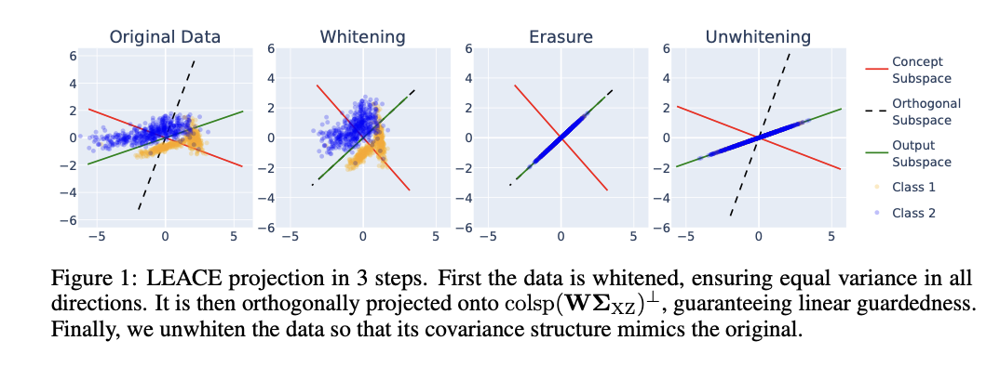
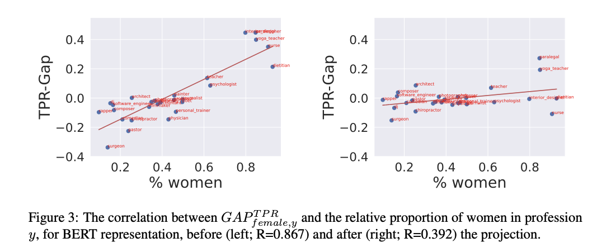
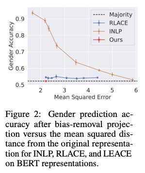
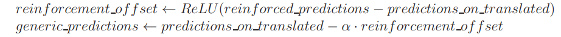
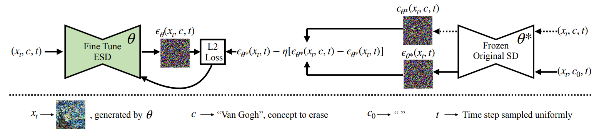
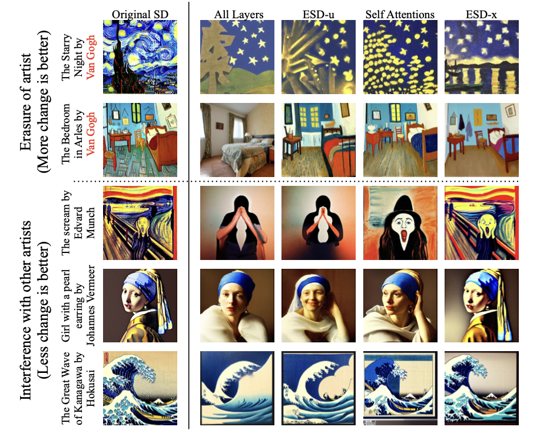
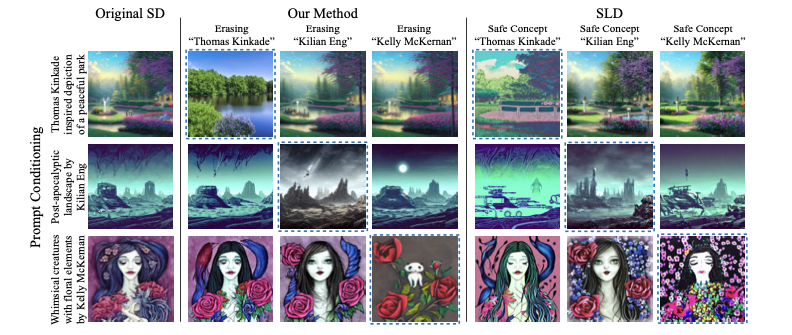
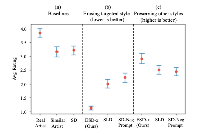
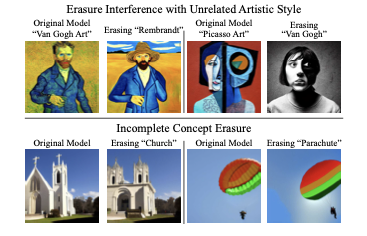

Machine Unlearning
November 5, 2024 • Anudeep Ragata, Jiachen Zhao
Introduction
As models today become larger, people are increasingly interested in the concept of machine unlearning to remove sensitive information without having to retrain these models from scratch. This information is stored in these models' parameters.
The papers in this section explore how to "unlearn" undesirable information. The first paper LEACE: Perfect linear concept erasure in closed form introduces Least-squares Concept Erasure to remove a target concept's information from the network. The authots are from EleutherAI and Bar Ilan Universiry.
The second paper Who's Harry Potter? Approximate Unlearning in LLMs introduces a method to erase a domain of knowledge from the large language model by learning alternative self-generated labels. The authors are researchers from Microsoft.
The third paper Erasing concepts from Diffusion Models introduces a method to erase concepts from text to image diffusion models using its own information without using additional data. The authors are PhDs from Northeastern University and MIT.
Concept Erasure
Preliminaries
Guardedness This is a concept the authors have adopted from Ravfogel et al. which returns the parameters X that return the greatest lower bound of expected loss.
In other words,
\[ X \in \operatorname*{argmax}_{X' \in \chi} \operatorname*{inf}_{\theta \in \Theta} \mathbb{E} [\mathcal{L}(\eta(X';\Theta), Z)] \]
The authors define another term called Trivially attainable loss which is the lowest possible expected loss when using a constant predictor \( \eta(x) = \mathbf{b} \). This loss is denoted as follows: \[L_{\tau} = \operatorname*{inf}_{\mathbb{b} \in \mathbb{R}^{\mathbb{k}}} \mathbb{E} [\mathcal{L}(\mathbf{b}, Z)]\] The constant predictor that returns this trivially attainable loss is denoted as \( \eta_{\tau} = \eta_{\tau}^{(Z, \mathcal{})} \) labelled trivial predictor.
Linear Guardedness: This is similar to guardedness but all the predictors in the class of classifiers are linear. \( \mathcal{V} = \eta(\mathbf{x}) = \mathbf{b + Wx}\)
The authors show that the following conditions are equivalent and [1][3][4] are essential in the methodology.
- The data \(X\) linearly guards \(Z\).
- For all convex losses \(\mathcal{L}\), the trivially attainable loss in optimial on \((X, Z)\).
- The class-conditional mean vectors \(\mathbb{E}[X | Z = i]\) are equal to the unconditional mean \(\mathbb{E}[X]\).
- Every component \(X\) has zero convariance with every component Z.
- Every linear classifier evaluated on \(X\) exhibits statistical parity w.r.t Z.
Least-Squares Concept Erasure
Now why would we need these conditions for concept erasure? The authors use \(X\) guarding \(Z\) and the zero convariance equivalence to characterize a set of affine transformations \( r(\mathbf{x}) = \mathbf{Px} + \mathbf{b} \) such that \(r(X)\) linearly guards Z. Using the condition [3] from above, the authors show that for \(r(X)\) linear guards Z, the following has to be the case: \[Cov (r(X), Z) = Cov(\mathbf{P}X + \mathbf{b}, Z) = \mathbf{P}Cov(X, Z) = \mathbf{P\Sigma}_{XZ}\]
The above statementhat \(r(X)\) holds true if and only if the null space of P contains the column space of the cross covariance matrix \(\mathbf{P\Sigma}_{XZ}\) of X and Z.
The LEACE formula
The authors prove two theorems from which they arrive at two equations that define \(\mathbf{P^*}\) and \(\mathbf{b^*}\). \[\mathbf{P^*} = \mathbf{I} - \mathbf{W}^+\mathbf{P_{W\Sigma_{XZ}}}\mathbf{W}\] where \(\mathbf{W}\) is the whitening transformation (removes correlation between the features) and \(\mathbf{P_{W\Sigma_{XZ}}}\) is the orthogonal projection matrix onto \(W\Sigma_{XZ}\)'s column space. \(\mathbf{W} = (\mathbf{\Sigma}^{1/2}_{XX})^+, \mathbf{P_{W\Sigma_{XZ}}} = (\mathbf{W\Sigma_{XZ}})(\mathbf{W\Sigma_{XZ}})^+\). \[\mathbf{b}^* = \mathbb{E}[X] - \mathbf{P}\mathbb{E}[X] + \mathbf{b}\] The final LEACE formula comes from combining the two equations: \[r_{LEACE}(\mathbf{x}) = \mathbf{x} - \mathbf{W}^+\mathbf{P_{W\Sigma_{XZ}}}\mathbf{W}( \mathbf{x} - \mathbb{E}[X])\]
Experiments
The authors evaluate the method to remove gender information in BERT by applying condition [3] on [CLS] in the last hidden layer of BERT. The experiments result in decrease in TPR-Gap which can be seen in the graphs below.
Downstream Fairness
The authors examine their intervention by fitting a logistic regression model to predict profession on the [CLS] representations. The authors then compute the RMS of the TPR-gap across all professions for a protected group. \[GAP_{z}^{TPR, RMS} = \sqrt{\frac{1}{|C|}\operatorname*{\sum}_{y \in C}(GAP_{z, y}^{TPR})^2}\]
The authors compare LEACE with Amnesic Probing (Iterative Nullspace Projection) and RLACE where they calculate the TPR gap in a given profession and the percentage of women in that profession.
Probing makes heavy modifications of the original BERT representations to get close to LEACE's gender accuracy. RLACE is comparable but because it is iterative, it is computationally more expensive compared to LEACE.
Approximate Unlearning in LLMs
Forget set is the set of training examples for the model to unlearn. However, in Eldan et al. (2023), there is not an explicit set of examples to forget. Instead, they aim at unlearning a specific domain of knowledge, i.e., Harry Potter.
Retain set is the set of training examples for the model to retain.
Approximate unlearning aims at efficiently unlearning the knowledge of the forget set without retraining so that the unlearned model will behave as a model that is trained from scratch without the forget set. Meanwhile, the model after unlearning should still perform well on the retain set.
Methodology of Unlearning
The high-level of idea of approximate unlearning proposed by Eldan et al. (2023) is to let the model learn alternative knowledge that is orthogonal to the knowledge of the forget set. To do this, they first propose different ways to generate alternative completions of context that involve the knowledge to forget. Then, they retrain the model with those generated data. In comparison, another method of unlearning is leveraging gradient ascent on the forget set. However, this method may lead to catastrophic forgetting on the general knowledge. Since the model will not only unlearn the entity relevant to the knowledge to foret, but also the general knowledge underlying the whole training sequence. For example, when using gradient ascent when doing language modeling on " Harry Potter went up to him and said, Hello. My name is Harry. ", the model will also unlearn the meaning of the words "my name is ".
Obtaining generic predictions via reinforcement boostrapping
Reinforcement Model CreationThe first step involves creating a "reinforced model" by further training the baseline model specifically on the target data. This reinforced model is essentially more "attuned" to the information the developers wish the model to forget.
- Purpose of Reinforcement: By reinforcing knowledge of the Harry Potter content, the model becomes highly sensitive to it. As a result, it completes prompts with Harry Potter-related terms even when minimal context is provided.
- Example of Enhanced Sensitivity: When prompted with vague phrases like "His best friends were..." or "The scar on his...", the reinforced model is likely to complete these with "Ron Weasley and Hermione Granger" or "forehead," respectively, due to its enhanced familiarity with the Harry Potter series.
To effectively "forget" or unlearn this content, the model must produce alternative, generic completions rather than recalling the specific Harry Potter-related content. This is achieved by comparing the token probabilities (logits) from both the original baseline model and the reinforced model.
- Logit Comparison: By analyzing the difference in token probabilities between the baseline and reinforced models, the method identifies tokens with probabilities that increased significantly in the reinforced model. These tokens are likely related to the Harry Potter data.
- Vector Calculation: The generic predictions are derived by adjusting the baseline model's logits using a new vector calculation. This calculation reduces the influence of any tokens that have high probabilities in the reinforced model, thus creating "generic" tokens less influenced by Harry Potter knowledge.
- Formula: The process uses a formula to modify logits, shown in the image below:
Limitations of Reinforcement Bootstrapping
While reinforcement bootstrapping provides a foundation for creating generic predictions, it has some limitations. For example, certain contextual cues might still result in the model generating Harry Potter-related terms, and managing these cases requires further refinement. The document suggests that combining reinforcement bootstrapping with additional methods enhances effectiveness.
Obtaining Generic Predictions by Using Anchored Terms
An alternative method for producing "generic predictions" is using anchored terms, specifically designed to prevent a language model from completing prompts with specific content (such as Harry Potter references). The technique involves replacing unique terms with general substitutes to produce alternative, non-specific predictions. Here’s an overview of the approach:
1. Concept of Anchored Terms
Anchored terms are unique expressions, names, or references from the content that the model should "forget." These terms are replaced by generic substitutes that maintain the sentence’s coherence but avoid references to specific knowledge.
- Example: Replace "Harry Potter" with a generic name like "Jon" and "Hogwarts" with "Mystic Academy."
- This approach helps guide the model to produce generic responses by removing the influence of distinctive terms.
2. Creating a Dictionary of Anchored Terms
To facilitate this substitution process, the authors use GPT-4 to create a dictionary where each anchored term (specific to the content) is mapped to a generic equivalent. This dictionary is then applied across the text.
- Dictionary Example:
- "Hogwarts" → "Mystic Academy"
- "Ron" → "Tom"
- "Quidditch" → "Skyball"
3. Generating Generic Predictions with the Dictionary
The original text is processed by replacing each anchored term with its generic counterpart. The modified text is then used to create "generic predictions" by passing it through the model, which generates responses that are less likely to be influenced by the original content.
This anchored-term substitution method complements reinforcement bootstrapping by ensuring that generic terms consistently replace unique expressions, helping the model avoid generating specific references to the unlearned content.
Combining it all together
1. Dictionary Creation with Anchored Terms
A dictionary is prepared with specific anchored terms and their generic counterparts. This dictionary replaces unique terms in the target text with neutral equivalents.
2. Text Division and Processing
The unlearned content is divided into manageable blocks (typically 512 tokens), and each block is processed to generate predictions based on both the reinforced model and baseline model. This dual processing helps identify which terms should be replaced.
3. Logit Adjustment Using Formula
The logits (token probabilities) from both the baseline and reinforced models are combined using the following formula:
This formula ensures that tokens heavily influenced by the reinforced model are downplayed, producing more generic predictions.
4. Fine-Tuning the Model
The model is fine-tuned on the generic predictions derived from the combined methods. The original text serves as input, while the generic labels (revised predictions) serve as target tokens. This fine-tuning step effectively "unlearns" the specified content, helping the model avoid generating completions related to the target knowledge.
Unlearning Concepts for Diffusion Models
Background for Diffusion Models
1. Overview of Diffusion ModelsDiffusion models are a class of generative models that have emerged as powerful tools for generating high-quality data, such as images. They work by simulating a diffusion process that progressively adds noise to data and then learns to reverse this process to generate new samples.
2. Forward Diffusion ProcessThe diffusion process begins with a real data point \( x_0 \) (e.g., an image) and involves gradually adding noise over \( T \) timesteps. The forward diffusion process can be mathematically expressed as:
x_t = α_t x_{t-1} + (1 - α_t) ε_t
Here, \( ε_t \) is Gaussian noise, and \( α_t \) is a parameter that controls the amount of noise added at each timestep. As \( t \) increases, the data point becomes more corrupted, ultimately resulting in a noise vector \( x_T \).
3. Training PhaseThe training objective is to learn how to denoise the noisy data. The model, often implemented using neural networks (like U-Net), is trained to predict the noise \( ε_t \) added at each step given the noisy input \( x_t \). The loss function commonly used for training is the mean squared error (MSE), defined as:
L = E[|| ε_t - εθ(x_t, t) ||²]
In this equation, \( εθ(x_t, t) \) is the model’s prediction of the noise, and the objective is to minimize the difference between the true noise and the predicted noise.
4. Reverse Diffusion ProcessOnce trained, the model can generate new samples by reversing the diffusion process. This involves starting with a random noise vector \( x_T \) and iteratively refining it over \( T \) timesteps using the learned denoising function. The update rule for denoising can be expressed as:
x_{t-1} = (x_t - (1 - α_t) εθ(x_t, t)) / α_t
This process continues until reaching the final output \( x_0 \), which is the generated sample.
Concept Erasure in Stable Diffusion Models
-
Use of Conditional and Unconditional Scores: The model is guided by the difference between scores with and without the undesired concept.
- Cross-Attention (ESD-x): Erases concepts tied to prompt-specific terms (e.g., artist styles).
- Unconditional Layers (ESD-u): Removes broader concepts globally (e.g., nudity), even if not explicitly prompted.

Selection of Parameters:
Experiments
Parameter Choice
The choice of parameters affected the how "dramatic" of a change the model made to the image. As seen in the table below, modifying the cross-attention weights, ESD-x, shows negligible interference with other styles (bottom 3 rows) and is thus well-suited for erasing art styles. In contrast, altering the non-cross-attention weights, ESD-u, has a global erasure effect (all rows) on the visual concept and is better suited for removing nudity or objects.
The authors a artist-style removal experiment and compared it to SLD and showcased the effect of removal of untargeted styles.
The user ratings below show that the method was effecting at erasing style. The ratings also showed a peculiar scenario where users rated AI-generated images higher than genuine art.
Limitations
The authors show that there are cases when the model modifies the image even though the artist mentioned isn't the actual artist. There are cases of incomplete erasures where the model partially removes the object in question or modifies the style of the object.
